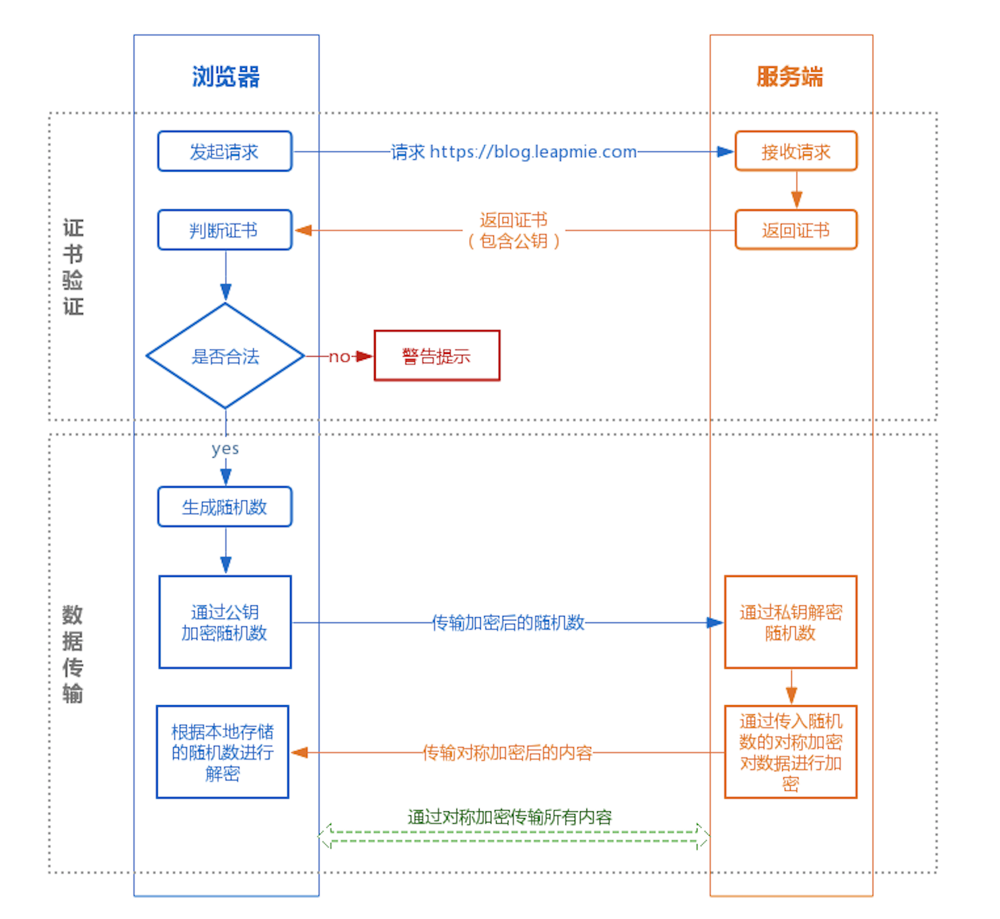

报文
请求报文
- 请求行：请求方法、请求地址和协议及版本，以CRLF结束。
- 请求Header：拥有若干个报文关属性，它们是为协助客户端及服务端交易的一些附属信息。 常见的有Accept 、Cookie 、Referer 、Cache-Control
- 空行分隔首部和内容主体 Body
- 请求体。
GET与POST的区别？
- GET是幂等的，即读取同一个资源，总是得到相同的数据，POST不是幂等的；
- GET一般用于从服务器获取资源，而POST有可能改变服务器上的资源；
- 请求形式上：GET请求的数据附在URL之后，在HTTP请求头中，参数有长度限制；POST请求的数据在请求体中，参数无长度限制；
- 安全性：GET请求可被缓存、收藏、保留到历史记录，参数暴露在URL中。POST不会被保存，安全性相对较高，参数在body中；
- 参数数据类型：GET只允许ASCII字符，POST对数据类型没有要求，也允许二进制数据；
- GET的长度有限制（操作系统或者浏览器的限制），而POST数据大小无限制
- GET产生一个TCP数据包；POST一般产生两个TCP数据包。：对于GET方式的请求，浏览器会把http header和data一并发送出去，服务器响应200（返回数据）；而对于POST，浏览器先发送header，服务器响应100 continue，浏览器再发送data，服务器响应200 ok（返回数据）
GET/POST 都是 TCP 链接。GET 和 POST 能做的事情是一样一样的。你要给 GET 加上 request body，给 POST 带上 url 参数，技术上是完全行的通的。不同服务器的处理方式也是不同的，有些服务器会帮你卸货，读出数据，有些服务器直接忽略，所以，虽然 GET 可以带 request body，也不能保证一定能被接收到哦。
并不是所有浏览器都会在POST中发送两次包，Firefox就只发送一次。
post里面传的都是表单吗？
contentType用于表明发送数据流的类型，服务器根据编码类型使用特定的解析方式，获取数据流中的数据。
在网络请求中，常用的Content-Type有如下：text/html, image/png,application/x-www-form-urlencoded, multipart/form-data, application/json等。
断点续传的原理是什么
范围请求，首部字段Range来指定资源的byte范围。
一个 url 分为哪几部分，各个部分的含义是什么
统一资源定位符（URL）是用于完整地描述Internet上网页和其他资源的地址的一种标识方法。
URL的一般格式为（带方括号[]的为可选项）：protocol://hostname[:port]/path/[;parameters][?query]#fragment
URL由三部分组成： 协议类型 ，主机名 和 路径及文件名 。
1、protocol（协议）：指定使用的传输协议， 最常用的是HTTP协议。
2、hostname（主机名）：是指存放资源的服务器的域名系统主机名或 IP 地址。
3、port（端口号）：省略时使用协议的默认端口，如http的默认端口为80。
4、path（路径）：由零或多个“/”符号隔开的字符串，一般用来表示主机上的一个目录或文件地址。
5、;parameters（参数）：这是用于指定特殊参数的可选项。
6、?query（查询）：可选，可有多个参数，用“&”符号隔开，每个参数的名和值用“=”符号隔开。
7、fragment，信息片断，字符串，用于指定网络资源中的片断。例如一个网页中有多个名词解释，可使用fragment直接定位到某一名词解释
百分号（URL）编码
因为早在 URL 被发明出来作为万维网地址时，就已规定只能使用英文字母、阿拉伯数字和某些标点符号，不能使用其他文字和符号。如果 URL 中有汉字或者其他标准之外的字符，就必须编码后使用。
百分号编码与 Base64 异同
相同点：它们都是用给定的 US-ASCII 码可打印字符去表示更广范围数据的方法。
区别：百分号编码是针对超出 URI 合法字符范围外的字符做编码，而 Base64 是针对二进制数据做编码；一个是对文本的编码，一个是对二进制数据的编码。
标准的Base64编码后可能出现字符
+和/，在URL中就不能直接作为参数。
HTTP怎么实现分包？
HTTP协议是一种文本协议（非二进制协议），用\r\n\r\n来分割消息头和消息体，HTTP请求的消息头中有Content-Length来告知消息体有多大，如果没有该字段就表示无消息体
报文头和报文体怎么分离
最后一个请求头之后是一个空行，发送回车符和换行符，通知服务器以下不再有请求头。
响应报文
- 第一行包含协议版本、状态码以及描述，最常见的是 200 OK 表示请求成功了
- 接下来多行也是首部内容，Expires、Last-Modified、Set-Cookie
- 一个空行分隔首部和内容主体
- 最后是响应的内容主体
HTTP
什么是HTTP
Hyper Text Transfer Protocol（超文本传输协议），是用于从万维网 服务器传输超文本到本地浏览器的传送协议。
HTTP是一个基于TCP/IP通信协议来传递数据（HTML 文件, 图片文件, 查询结果等）。属于TCP上层的协议，但是本身并无会话的特点，它是一个基于请求/响应模式的、无状态的协议，以一问一答的方式实现服务。
HTTP为什么基于TCP？
http协议只定义了应用层的东西，下层的可靠性要传输层来保证，只要是可以保证可靠性传输层协议都可以承载http，比如有基于sctp的http实现。 http也不是不能通过udp承载，在手机上就有人自己开发基于reliable udp的http协议，不过都是非标准的
http1.0/1.1/2.0 的区别
HTTP 1.1
长连接，HTTP 1.1支持长连接和请求的流水线处理，在一个TCP连接上可以传送多个HTTP请求和响应，在HTTP1.1中默认开启Connection： keep-alive，一定程度上弥补了HTTP1.0每次请求都要创建连接的缺点
Host头处理，HTTP1.1的请求消息和响应消息都应支持Host头域，且请求消息中如果没有Host域会报告一个错误（400 Bad Request）。在HTTP1.0中认为每台服务器都绑定一个唯一的IP地址，因此，请求消息中的URL并没有传递主机名。但随着虚拟主机技术的发展，在一台物理服务器上可以存在多个虚拟主机，并且它们共享一个IP地址
缓存处理，HTTP1.1则引入了更多的缓存控制策略，例如If-Match, If-None-Match等更多可供选择的缓存头来控制缓存策略。
带宽优化及网络连接的使用，HTTP1.0中不支持断点续传功能，HTTP1.1则在请求头引入了range头域，它允许只请求资源的某个部分，便于充分利用带宽和连接。
错误通知的管理，在HTTP1.1中新增了24个错误状态响应码。
HTTP 2.0
HTTP2.0的多路复用
浏览器对同一域名下的并发连接数量有限制，一般为6个。HTTP1中的keep-alive必须等本次请求彻底完成后才能发送下一个请求，而HTTP2的请求与响应以二进制帧的形式交错进行，只需建立一次连接，即一轮三次握手，实现多路复用
HTTP2.0压缩消息头
HTTP 2.0 会对 HTTP 的头进行一定的压缩：将原来每次都要携带的大量 key value在两端建立一个索引表，对相同的头只发送索引表中的索引。
HTTP2.0服务端推送
HTTP2.0中服务器会主动将资源推送给客户端，例如把js文件主动推送给客户端而不用客户端解析HTML后请求再响应。
HTTP2.0的多路复用和HTTP1.X中的长连接复用有什么区别？
- HTTP/1.0 每一个请求都要建立一个连接；
- HTTP/1.1 默认是 keep-alive 的，即tcp连接可以复用，不用每次都要重新建立和断开 TCP 连接，后面的请求等待前面请求的返回才能获得执行机会，一旦有某请求超时等，后续请求只能被阻塞。
- HTTP/2多个请求可同时在一个连接上并行执行。某个请求任务耗时严重，不会影响到其它连接的正常执行；
浏览器对同一 Host 建立 TCP 连接到数量有没有限制？
Chrome 最多允许对同一个 Host 建立六个 TCP 连接，不同的浏览器有一些区别。
http层的keep-alive
用于客户端告诉服务端，这个连接我还会继续使用，在使用完之后不要关闭。
减少了TCP的三次握手和四次挥手，第二次传递数据就可以通过前一个连接直接进行数据交互了。
在HTTP1.0和HTTP1.1协议中都有对KeepAlive的支持。其中HTTP1.0需要在request中增加”Connection： keep-alive” header才能够支持，而HTTP1.1默认支持。
HTTP如何保持长连接？
- Client发出request，其中该request的HTTP版本号为1.1。
- Web Server收到request中的HTTP协议为1.1就认为是一个长连接请求，其将在response的header中也增加”Connection： keep-alive”。同时不会关闭已建立的tcp连接。
- Client收到Web Server的response中包含”Connection： keep-alive”，就认为是一个长连接，不close tcp连接。并用该tcp连接再发送request。
一个TCP支持多少个HTTP请求？
在 HTTP/1.0 中，一个服务器在发送完一个 HTTP 响应后，会断开 TCP 链接。
HTTP/1.1 默认开启持久连接，一个TCP连接是支持多个http请求的。
HTTPS
什么是 https
简单来说， https 是 http + ssl，对 http 通信内容进行加密，是HTTP的安全版，是使用TLS/SSL加密的HTTP协议
Https的作用：
- 内容加密 建立一个信息安全通道，来保证数据传输的安全；
- 身份认证 确认网站的真实性
- 数据完整性 防止内容被第三方冒充或者篡改
什么是SSL
Secure Socket Layer，通过Web创建安全的Internet通信。
一种标准协议，用于加密浏览器和服务器之间的通信。
HTTP和HTTPS区别？
- 端口不同：HTTP使用的是80端口，HTTPS使用443端口；
- HTTP信息是明文传输，HTTPS运行在SSL之上，添加了加密和认证机制，更加安全；
- HTTPS由于加密解密会带来更大的CPU和内存开销；
- HTTPS通信需要证书，一般需要向CA购买
- HTTP 页面响应速度比 HTTPS 快，主要是因为 HTTP 使用 TCP 三次握手建立连接，客户端和服务器需要交换 3 个包，而 HTTPS除了 TCP 的三个包，还要加上 ssl 握手需要的 9 个包，所以一共是 12 个包。
Https的连接过程？

证书验证阶段
- 浏览器发起请求，请求携带了浏览器支持的加密算法和哈希算法
- 服务器接收到请求之后，选择浏览器支持的加密算法和哈希算法，会返回证书，包括公钥
- 浏览器接收到证书之后，使用公钥解密，会检验证书是否合法（网站的网址、网站的公钥、证书的有效期），不合法的话，会弹出告警提示
数据传输阶段
证书验证合法之后
- 浏览器会生成一个随机数，
- 使用公钥进行加密，发送给服务端
- 服务器收到浏览器发来的值，使用私钥进行解密，得到随机数
- 解析成功之后，使用随机数为秘钥的对称加密算法进行加密，传输给客户端
之后双方通信就使用第一步生成的随机数进行加密通信。
https为什么要采用对称和非对称加密结合的方式
非对称加密在性能上不如对称加密， 对称加密安全性比较低。
所以公钥私钥主要用于传输对称加密的秘钥，而真正的双方大数据量的通信都是通过对称加密进行的。
什么是中间人攻击
如果有个中间人拦截客户端请求，然后向客户端提供自己的公钥，再向服务端请求公钥。
与通讯的两端分别创建独立的联系，并交换其所收到的数据，使通讯的两端认为他们正在通过一个私密的连接与对方直接对话。
HTTPS 使用了 SSL 加密协议，是一种非常安全的机制，目前并没有方法直接对这个协议进行攻击，一般都是在建立 SSL 连接时，拦截客户端的请求，利用中间人获取到 CA证书、非对称加密的公钥、对称加密的密钥；有了这些条件，就可以对请求和响应进行拦截和篡改。
https 是如何防止中间人攻击的
https证书，需要证明服务端的公钥是正确的，证明就需要权威第三方机构CA来公正了。
浏览器是如何确保CA证书的合法性？
证书包含什么信息？
颁发机构信息、公钥、公司信息、域名、有效期、指纹…
浏览器如何验证证书的合法性？
- 验证域名、有效期等信息是否正确。证书上都有包含这些信息，比较容易完成验证；
- 判断证书来源是否合法。每份签发证书都可以根据验证链查找到对应的根证书，操作系统、浏览器会在本地存储权威机构的根证书，利用本地根证书可以对对应机构签发证书完成来源验证；
- 判断证书是否被篡改。需要与CA服务器进行校验；
- 判断证书是否已吊销。
https 可以抓包吗
常规下抓到的包是加密状态，无法直接查看。
模拟中间人抓包
- 通常 HTTPS 抓包工具的使用方法是会生成一个证书，用户需要手动把证书安装到客户端中。
- 然后终端发起的所有请求通过该证书完成与抓包工具的交互，然后抓包工具再转发请求到服务器
- 最后把服务器返回的结果在控制台输出后再返回给终端，从而完成整个请求的闭环。
输入 xxx.com，怎么变成 https://www.xxx.com 的？
302跳转，服务器把所有的HTTP流量跳转到HTTPS。
什么是对称加密、非对称加密？区别是什么？
- 对称加密：加密和解密采用相同的密钥。如：DES、RC2、RC4
- 非对称加密：需要两个密钥：公钥和私钥。如果用公钥加密，需要用私钥才能解密。私钥加密的信息，只有公钥才能解密 如：RSA
- 区别：对称加密速度更快，通常用于大量数据的加密；非对称加密安全性更高（不需要传送私钥）
对称加密问题
黑客一旦截获秘钥，它可以佯作不知，静静地等着你们两个交互。这时候互通的任何消息，它都能截获并且查看 。
非对称加密
私钥放在外卖网站这里，不会在互联网上传输，这样就能保证这个秘钥的私密性。
对应私钥的公钥，是可以在互联网上随意传播的，只要外卖网站把这个公钥给你，你们就可以愉快地互通了。
客户端也需要有自己的公钥和私钥，并且客户端要把自己的公钥，给外卖网站。
数字证书
鉴别别人给你的公钥是对的。 包括公钥、证书的所有者 、CA签名、颁发者、签名算法。
数字签名、报文摘要的原理
- 发送者A用私钥进行签名，接收者B用公钥验证签名。因为除A外没有人有私钥，所以B相信签名是来自A。A不可抵赖，B也不能伪造报文。
- 摘要算法：MD5、SHA
签名算法
一般是对信息做一个 Hash 计算，得到一个 Hash 值，这个过程是不可逆的，也就是说无法通过 Hash 值得出原来的信息内容。在把信息发送出去时，把这个 Hash 值加密后，作为一个签名和信息一起发出去。
CA 用自己的私钥给外卖网站的公钥签名，就相当于给外卖网站背书，形成了外卖网站的证书。
Session和Cookie
Session与Cookie的区别？
Session是服务器端保持状态的方案，Cookie是客户端保持状态的方案
Cookie保存在客户端本地，客户端请求服务器时会将Cookie一起提交；
Session保存在服务端，通过检索Sessionid查看状态。保存Sessionid的方式可以采用Cookie
cookie用途
保存用户相关信息，下次再访问您的站点时，应用程序就可以检索以前保存的信息。
服务端怎么设置cookie
服务器端向客户端发送Cookie是通过HTTP响应报文实现的，在Set-Cookie中设置cookie
cookie关闭浏览器重新打开就没了吗？
cookie生命周期默认为浏览器会话期间，驻留内存，关闭浏览器cookie就没了
可以设置cookie的过期时间为永不过期，将cookie保存在硬盘上
浏览器禁用cookie怎么办
URL重写
通过request判断前端是否禁用了cookie，如果禁用了cookie，在url后带上jsessioonid。
cookie包含哪几项内容
- Expire：cookie失效日期。
- Domain和Path：限制 cookie 能被哪些 URL 访问。即请求的URL是Domain或其子域、且URL的路径是Path或子路径，则都可以访问该cookie
- Size：Cookie的大小
- Secure：Secure选项用来设置cookie只在确保安全的请求中（HTTPS）才会发送。
- httpOnly：这个选项用来设置cookie是否能通过 js 去访问。带httpOnly选项时，客户端则无法通过js代码去访问cookie。
http/1.1协议中Expires已经由 Max age 选项代替。
Cookie防劫持预防?
基于XSS攻击, 窃取Cookie信息, 并冒充他人身份。
- 给Cookie添加HttpOnly属性, document.cookie无法获取到该Cookie值.
- 在cookie中添加校验信息, 这个校验信息和当前用户外置环境有些关系,比如ip、agent有关,当cookie被人劫持了,在服务器端校验的时候, 发现校验值发生了变化, 因此要求重新登录
- cookie中session id的定时更换
状态码
常见状态码
- 2xx状态码：操作成功。200 OK，201状态码英文名称是Created，该状态码表示已创建。
- 3xx状态码：重定向。301 永久重定向；302暂时重定向
- 4xx状态码：客户端错误。400 Bad Request；401 Unauthorized；403 Forbidden；404 Not Found；405 (方法禁用) 禁用请求中指定的方法。
- 5xx状态码：服务端错误。500服务器内部错误；501服务不可用； 502 Bad Gateway：请求未完成，服务器从上游服务器收到一个无效的响应。
502并不是指网关（例如nginx）本身出了问题，而是从上游接收响应出了问题，比如由于上游服务自身超时导致不能产生响应数据，或者上游不按照协议约定来返回数据导致网关不能正常解析。
504，Gateway Timeout，网关超时。它表示网关没有从上游及时获取响应数据。原因在于超过了nginx自身的超时时间
304 Not Modified：客户端有缓冲的文件并发出了一个条件性的请求（一般是提供If-Modified-Since头表示客户只想比指定日期更新的文档）。服务器告诉客户，原来缓冲的文档还可以继续使用。
发生502，应该先查看什么
502错误最通常的出现情况就是后端主机宕机。
1、查看后台进程数是否够用，确定是否是因为高并发导致的
2、查看程序执行时间是否超过Nginx等待时间，应用日志。可能是数据库死锁导致的。
3、查看Nginx日志
发生500应该先查看什么
先看看服务的进程还在不在，然后查看日志，从日志里面找原因。
为什么重定向？
域名别称
需要为资源设定不同的名称。其重定向到那个实际的URL
保持链接有效
重构 Web 站点，不想旧链接失效。
对于耗时请求的临时响应
一些请求的处理会需要比较长的时间，链接到一个页面，表示请求的操作已经被列入计划，并且最终会通知用户操作的进展情况。
从输入网址到获得页面的过程？
- 浏览器查询 DNS，获取域名对应的IP地址:具体过程包括浏览器搜索自身的DNS缓存、搜索操作系统的DNS缓存、读取本地的Host文件和向本地DNS服务器进行查询等。对于向本地DNS服务器进行查询，如果要查询的域名包含在本地配置区域资源中，则返回解析结果给客户机，完成域名解析(此解析具有权威性)；如果要查询的域名不由本地DNS服务器区域解析，但该服务器已缓存了此网址映射关系，则调用这个IP地址映射，完成域名解析（此解析不具有权威性）。如果本地域名服务器并未缓存该网址映射关系，那么将根据其设置发起递归查询或者迭代查询；
- 浏览器获得域名对应的IP地址以后，浏览器向服务器请求建立链接，发起三次握手；
- TCP/IP链接建立起来后，浏览器向服务器发送HTTP请求；
- 服务器接收到这个请求，并根据路径参数映射到特定的请求处理器进行处理，并将处理结果及相应的视图返回给浏览器；
- 浏览器解析并渲染视图，若遇到对js文件、css文件及图片等静态资源的引用，则重复上述步骤并向服务器请求这些资源；
- 浏览器根据其请求到的资源、数据渲染页面，最终向用户呈现一个完整的页面。